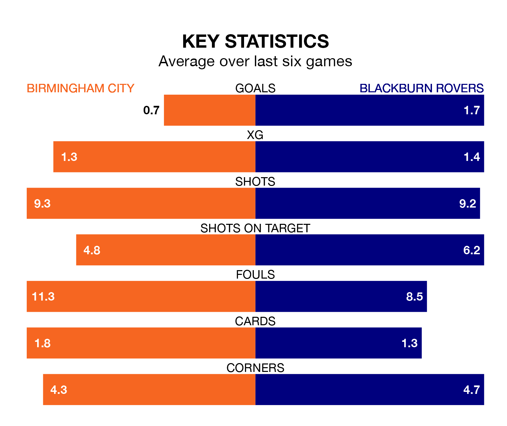

Birmingham City host Blackburn Rovers on Tuesday at St Andrew's in EFL Championship.
In their last league match, on Friday, Birmingham lost to Sheffield Wednesday 2-0 away.
Blackburn won, 3-1 at home against Stoke City on Saturday, with Tyrhys Dolan (two) and Samuel Szmodics on the scoresheet.
In Szmodics, Blackburn have the league's sharpest shooter so far this season. He has notched 17 goals in 28 appearances.
His goal rate of one every 145 minutes is quicker than that of Jay Stansfield, Birmingham's top scorer with a goal every 252 minutes, and a total of eight goals in 27 games.
In the last 10 years, Birmingham and Blackburn have played each other on 21 occasions. Birmingham won four of them, Blackburn 10, and they drew seven times.
On average, the Blues scored 1.1 goals and Blackburn 1.8 in those matches.
Their last meeting was on November 29, when Blackburn won 4-2 at home.
With 34 goals in 30 games so far this season, City are scoring at below the league average rate with 1.1 goals per game. And they are conceding more than average, letting in 47 goals at a rate of 1.6 per game.
Rovers, meanwhile, are above average scorers, with 1.5 goals per game, compared to a league average of 1.4. They have conceded 1.9 goals per game.
The Blues are 19th in the table after 30 games, of which they have won eight and drawn eight, earning 32 points.
The visitors are two places ahead of the home team in 17th, with 11 wins and three draws putting them on 36 points.
Birmingham are in disappointing form in EFL Championship, with one win and two draws from their last six games.
And also with a win and two draws over that period, Blackburn's form is identical – they have both taken five points from 18.
Updated: 09:02 (UTC), 13/02/24